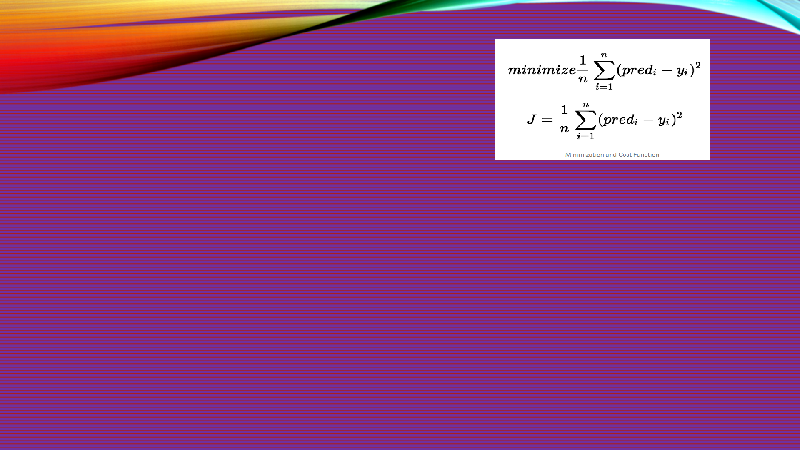

LINEAR REGRESSION
Avinash Dwivedi
AI ML DL NLP Cloud Consultant

OBJECTIVE
• Intro to Linear regression model
• Advantage & Disadvantage of Linear regression
• Cost function and Gradient Descent
• Role of gradient Descent in interpretation of model
• Difference between R squared & adjusted R squared
• Assumption made to build linear regression model

REGRESSION?
• Regression is a method of modelling a target value based on independent
predictors.
• method is mostly used for forecasting and finding out cause and effect
relationship between variables
• Regression techniques mostly differ based on the number of independent
variables and the type of relationship between the independent and
dependent variables

LINEAR REGRESSION???
• Linear regression performs the task to predict a dependent variable value (y)
based on a given independent variable (x). So, this regression technique
finds out a linear relationship between x (input) and y(output). Hence, the
name is Linear Regression.
In the figure above, X (input) is the work experience and Y (output) is the
salary of a person. The regression line is the best fit line for our model..
• y = a_0 + a_1 * x --- Linear Equation

HYPOTHESIS FUNCTION
• y = a_0 + a_1 * x
• While training the model we are given :
x:input training data (univariate – one input variable(parameter))
y:labels to data (supervised learning)
• When training the model – it fits the best line to predict the value of y for a
given value of x. The model gets the best regression fit line by finding the best
a_0 and a_1values.
a_0 :intercept
a_1 :coefficient of x
• Once we find the best a_0 and a_1 values, we get the best fit line. So when
we are finally using our model for prediction, it will predict the value of y for
the input value of x.

COST FUNCTION
• COST FUNCTION:-
• The different values for weights or coefficient of lines (a
0
, a
1
) gives the
different line of regression, and the cost function is used to estimate the
values of the coefficient for the best fit line.
• Cost function optimizes the regression coefficients or weights. It measures
how a linear regression model is performing.
• We can use the cost function to find the accuracy of themapping function,
which maps the input variable to the output variable. This mapping function
is also known asHypothesis function.

• Want the best values for a_0 and a_1???
• By achieving the best-fit regression line, the model aims to predict y value
such that the error difference between predicted value and true value is
minimum.
• Cost function(J) of Linear Regression is theRoot Mean Squared Error
(RMSE)between predicted y value (pred) and true y value (y).
• SOLUTION:----
• convert this search problem into a minimization problem where we would
like to minimize the error between the predicted value and the actual value.

MEAN SQUARE ERROR
• The difference between the predicted values and ground truth measures
the error difference. We square the error difference and sum over all data
points and divide that value by the total number of data points. This provides
the average squared error over all the data points. Therefore, this cost
function is also known as the Mean Squared Error(MSE) function.
• using this MSE function we are going to change the values of a_0 and a_1
such that the MSE value settles at the minima

GRADIENT DESCENT
• Gradient descent is used to minimize the MSE by calculating the gradient of
the cost function.
• To update a_0 and a_1 values in order to reduce Cost function (minimizing
RMSE value) and achieving the best fit line the model uses Gradient Descent.
The idea is to start with random θ
1
and θ
2
values and then iteratively
updating the values, reaching minimum cost.
• A regression model uses gradient descent to update the coefficients of the
line by reducing the cost function.
• It is done by a random selection of values of coefficient and then iteratively
update the values to reach the minimum cost function.
• You may be wondering how to use gradient descent to update a_0 and
a_1??
• To update a_0 and a_1, we take gradients from the cost function. To find these
gradients, we take partial derivatives with respect to a_0 and a_1.
• The partial derivative are the gradients and they are used to update the values of
a_0 and a_1.
Alpha is the learning rate which is a hyper parameter .

QUESTION AND ANSWER
• 1. For Feature selection what are the different techniques available and how to
apply in regression problem?
• Answer –
• Feature selection refers to techniques that select a subset of the most relevant
features (columns) for a dataset. Fewer features can allow machine learning
algorithms to run more efficiently (less space or time complexity) and be more
effective. Some machine learning algorithms can be misled by irrelevant input
features, resulting in worse predictive performance.
There are three approach to do feature selection.
• 1. Manual – Manually analyze it and chose the best feature and eliminate others.
• 2. Using Algorithm -> RFE ,AIC ,BIC(This also for model selection) etc
• 3. Mixed approach –> Algorithm + Manual
• RFE -> Recursive Feature Elimination – Best way for now

RFE -> RECURSIVE FEATURE
ELIMINATION
• RFE is a wrapper-type feature selection algorithm. This means that a different
machine learning algorithm is given and used in the core of the method, is wrapped
by RFE, and used to help select features.
• This is in contrast to filter-based feature selections that score each feature and select
those features with the largest (or smallest) score.
For detail understanding just go through this blog and read RFE for regression-
https://machinelearningmastery.com/rfe-feature-selection-in-python/
For AIC BIC or other algorithm read below-
https://www.methodology.psu.edu/resources/AIC-vs-BIC/
https://www.hindawi.com/journals/js/2015/142612/
https://machinelearningmastery.com/probabilistic-model-selection-measures/
QUESTION AND ANSWER
• 2 Normalization Vs standardization in case of feature selection in regression?
Answer
NORMALIZATION VS
STANDARDIZATION
• Normalizationis a good technique to use when you do not know the distribution of
your data or when you know the distribution is not Gaussian (a bell curve).
Normalization is useful when your data has varying scales and the algorithm you are
using does not make assumptions about the distribution of your data, such as k-
nearest neighbors and artificial neural networks.
• Standardizationassumes that your data has a Gaussian (bell curve) distribution. This
does not strictly have to be true, but the technique is more effective if your attribute
distribution is Gaussian. Standardization is useful when your data has varying scales
and the algorithm you are using does make assumptions about your data having a
Gaussian distribution, such as linear regression, logistic regression, and linear
discriminant analysis.
• For more detail - https://towardsai.net/p/data-science/how-when-and-why-should-
you-normalize-standardize-rescale-your-data-3f083def38ff
QNA
• 3. Difference between Bias and Variance?
• Answer ->
• Bias is the simplifying assumptions made by the model to make the target
function easier to approximate.
• Variance is the amount that the estimate of the target function will change
given different training data.
• Go through it - https://machinelearningmastery.com/gentle-introduction-to-
the-bias-variance-trade-off-in-machine-
learning/#:~:text=Bias%20is%20the%20simplifying%20assumptions,change%20
given%20different%20training%20data.
QNA
• 4. What is Constant Variance of Error term?
Answer ->
it means that the distribution of error terms will
have the same “spread” at every
possiblexvalue on the regression line.
It means that when you plot the individual
error against the predicted value, the
variance of the error predicted value should
be constant. See the red arrows in the picture
below, the length of the red lines (a proxy of
its variance) are the same.
QNA
• 5. Can we drop some variables after analyzing EDA before RFE or keep it
and let RFE run using all the columns?
• Answer – Both way will work and possible.